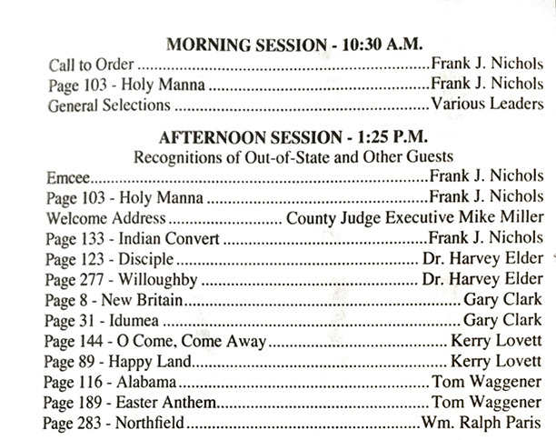

|
|
颂主新歌 |
|
1 Brethren, we have met to worship 2 Brethren, see poor sinners round you 3 Sisters, will you join and help us? 4 Let us love our God supremely, Baptist Hymnal, 1991 |
1.信主弟兄齐集主前，虔诚敬拜永活神； |
|
https://www.mred365.cn/szxg/7043.html
https://hymnary.org/hymn/CGH2010/page/277
|
|
|
|
|


010 齐集主前 Bethren, we have met to worship https://youtu.be/wuwYt57ix9M -
https://youtu.be/xt3rZxuUgZc -
Brethren We Have Met To Worship · Seminole String Band
https://youtu.be/DTWykRiSwVc -
https://wilds.org/store/product/brethren-we-have-met-to-worship-2/
- Brethren we have met to Worship- Handbell Quartet
https://youtu.be/OjwZWWAgb6g
| Text: | Brethren, We Have Met to Worship |
| Author: | George Askins |
| Tune: | HOLY MANNA |
| Short Name: | George Askins |
| Full Name: | Askins, George |
| Death Year: | 1816 |
George Askins was born in Ireland. He immigrated to the United States as an adult. He was a Methodist and became an itinerant preacher for the Baltimore Conference in 1801. He was appointed to other circuits as well, mostly in Maryland, Virginia, and Kentucky. He died in Frederick, Maryland 28 February 1816.
Dianne Shapiro from The Makers of the Sacred Harp by David Warren Steel with Richard H. Hulan, University of Illinois Press, 2010
The opening stanza of this call to worship calls on Christians to pray for the
Holy Spirit's presence as the service begins, while the final stanza calls for
believers to live in the love of God in anticipation of the full redemption of
creation when Christ returns.
Text:
The author of this hymn has not been positively identified. It has been traditionally attributed to George Atkins, but no further information has been found about him or the text. The five stanzas of this text first appeared in print in the early nineteenth century. The fourth stanza (“Is there here a trembling jailer”) is often omitted. The final two lines of each stanza, are based on these lines: “pray, and holy manna will be showered all around,” which may be a reference to the story of God providing manna to feed the Israelites in the wilderness.
One issue with this text is the gender-specific language, particularly the emphasis on “brethren” in the first two stanzas, though the third stanza helps balance the wording by addressing “sisters.” One solution used by some hymnals is the substitution of “Christians” in place of “brethren” and “sisters.” The fourth and fifth stanzas are less affected by this.
Tune:
The tune HOLY MANNA is traditionally attributed to William Moore, though just as with the text, this is not beyond doubt. Moore published the earliest known instance of this tune in his Columbian Harmony in 1825. HOLY MANNA is a pentatonic, folk-like tune and can be sung either at a moderate tempo in a four-four pattern or at a quick tempo with a cut-time meter. The tune name comes from the reference to “holy manna” in each stanza of the text.
When/Why/How:
This hymn may be used as a call to worship, as in “Christians, We Have Come to Worship,” which contains a choral opening sentence from the first two lines of the text. A longer choral call to worship blends “Brethren, We Have Met to Worship” and “Come, Christians, Join to Sing” in “Come and Worship.” The later stanzas could be used after a sermon on evangelism as a call to action, as in the simple choral setting of this text to its traditional tune, “HOLY MANNA,” or a piano postlude, such as in “The Church Pianist's Library, Vol. 5.”
Tiffany Shomsky,
Hymnary.org
Tune Information
| Title: | HOLY MANNA |
| Composer (attributed to): | William Moore |
| Meter: | 8.7.8.7 D |
| Incipit: | 55611 22132 16556 |
| Key: | G Major |
| Source: | American folk hymn melody |
| Copyright: | Public Domain |
| Short Name: | William Moore |
| Full Name: | Moore, William, active 1825 |
| Birth Year: | 1790 |
| Death Year: | 1850 |
William B Moore USA 1790-1850. He was born, possibly in TN. He was a composer, having contributed tunes to” Wyeth’s Repository” (1810) and known for his tunebook “Columbian Harmony” (1825) in TN. He also composed and arranged several tunes in William Walker’s “Southern Harmony” (1835).
John Perry
颂主新歌 040齐集主前
神是个灵，所以拜祂的，必须用心灵和诚实拜祂。（约 4:24）
敬拜，是尊主为大和以神为乐的表现，是因为圣灵带同极大的恩典和福气临在，使我们生命丰富满溢的表现之一！
当人的心和灵发现圣灵所赐的福气的时候，他的心会产生敬畏战竞而尊主为大，他的灵会产生喜乐雀跃而以神为乐！在这样的心境下，他涌出心灵的敬拜，欣赏神、
赞美和感谢神，感谢祂的眷顾，施怜悯并在我们身上所成就的大事。因此，敬拜是敬畏与喜乐的混合心境，是心与灵对神恩典的和应！
从灵里涌出喜乐、欣悦、尊崇与赞美，这是神喜悦的敬拜。为何在我们的敬拜中，很少有这样自发的感情呢？因为我们在灵里太少经历到神的作为！每次要去崇拜时，让我们自问：我的敬拜是否因经历神而从内心涌出赞美呢？
「齐集主前」这首圣诗是 George Atkins 所作。 1825 年第一次问世以来，深获许多基督徒所喜爱，一班教会常用在主日崇拜开始之时颂唱。至于有关于
George Atkins 之生平不详。本诗之曲乃 William Moore 作于 1825 年。
Brethren, We Have Met Together -oldest American folk hymns
| Brethren, We Have Met Together | |
|---|---|
| Folk hymn | |

Camp-meeting / A. Rider pinxit ;
drawn on stone by H. Bridport
|
|
| Text | by George Atkins |
| Meter | 8.7.8.7 D |
| Melody | Holy Manna |
| Published |
|
"Brethren, We Have Met Together", commonly known by the first line "Brethren, we have met to worship", is one of the oldest published American folk hymns. The lyrics were written by George Atkins and first published in 1819. The traditional tune, Holy Manna, is a pentatonic melody in Ionian mode originally published by William Moore in Columbian Harmony, a four-note shape-note tunebook, in 1829.[1] Like most shape-note songs from that century, it is usually written in three parts.
It is commonly sung as the opening song at shape-note singing events.
Lyrics[edit]
The lyrics, from Southern Harmony, are:
Brethren, we have met to worship,
And adore the Lord our God;
Will you pray with all your power,
While we try to preach the word?
All is vain, unless the Spirit
Of the Holy One come down;
Brethren, pray, and holy manna
Will be showered all around.
Brethren, see poor sinners round you,
Trembling on the brink of woe;
Death is coming, hell is moving;
Can you bear to let them go?
See our fathers, see our mothers,
And our children sinking down;
Brethren, pray, and holy manna
Will be showered all around.
Sisters, will you join and help us?
Moses' sisters aided him;
Will you help the trembling mourners,
Who are struggling hard with sin?
Tell them all about the Savior,
Tell him that he will be found;
Sisters, pray, and holy manna
Will be showered all around.
Is there here a trembling jailer,
Seeking grace and filled with fears?
Is there here a weeping Mary,
Pouring forth a flood of tears?
Brethren, join your cries to help them;
Sisters, let your prayers abound;
Pray, O! pray, that holy manna
May be scattered all around.
Let us love our God supremely,
Let us love each other too;
Let us love and pray for sinners,
Till our God makes all things new
Then he'll call us home to heaven,
At his table we'll sit down.
Christ will gird himself and serve us
With sweet manna all around.
References[edit]
- ^ Music, David W. (2005-10-30). A Selection of Shape-Note Folk Hymns: From Southern United States Tune Books, 1816-61. A-R Editions, Inc. pp. 32–33. ISBN 9780895795755. Retrieved 17 February 2013.
https://en.wikipedia.org/wiki/Brethren,_We_Have_Met_Together
History of Hymns: 'Brethren, We Have Met to Worship'
BY C. MICHAEL HAWN
“Brethren, We Have Met to Worship”
by George Askins
Glory to God (2013), 396
Brethren, we have met to worship
and adore the Lord our God; (Psalm 29:2)
will you pray with all your power,
while we try to preach the Word?
All is vain unless the Spirit
of the Holy One comes down; (Zechariah 4:6; John 4:23-24)
Brethren, pray, and holy manna
will be showered all around. (Exodus 16:4, 31; Deuteronomy
8:16)
This was a favorite hymn, especially on Sunday evenings, when I grew up. I enjoyed singing it because of its buoyant tune, direct language, and biblical references. The hymn seemed to fall out of favor and was eliminated from many hymnals (including Methodist hymnals) during the 1960s through the 1980s, perhaps because of its gender-specific incipit (first line), or because it seemed a bit too rough-hewn for emerging styles of congregational song. However, I am pleased to report that it is making a comeback not only in hymnals from the evangelical tradition such as The Worshiping Church (1990) and Celebrating Grace (2010), but also in the Christian Church (Disciples of Christ) Chalice Hymnal (1995) and the Presbyterian Church (USA) Glory to God (2013). Any hymn brings with it a cultural context and historical perspective as well as a biblical and theological message. Let us look at the roots of this hymn.
Askins or Atkins?
We have a bit of a mystery: Who is the author of the text? There are two who vie for recognition. They seem to have quite a bit in common: both are Methodist preachers who came from Great Britain and ministered on the east coast of the United States; both were born in the eighteenth century and died in the nineteenth century; and, perhaps most curiously, both would appear to have the same name, save for one letter – George Askins versus George Atkins.
George Askins (b. Ireland; d. Frederick, Maryland; 28 February 1816) has recently been credited by Sacred Harp scholar Richard H. Hulan (b. 1939) as being the author of this text. Little is known about Askins save his birth country, Ireland, and that he made his way to the United States by 1801 as an adult Methodist where he was given a charge as a trial itinerate preacher in the Montgomery circuit of the Baltimore Annual Conference. Still on trial, he was assigned to the Ohio circuit of the Pittsburgh Annual Conference in 1802 and then to the Shenango circuit of the same annual conference in 1803 in full connection. Between 1803 and 1815, he served as deacon and then elder in the Ohio, Kentucky, Miami, Virginia, and Baltimore annual conferences (Steel and Hulan, 74-75).
Several songs used in camp meetings helped to bring some of Askins’s hymns to light. Credit for the first printing of “Brethren, We Have Met to Worship” goes to John J. Harrod, who included it in his Social and Camp-Meeting Hymns for the Pious (Baltimore, 1817), a year after Askins’s death (Steel and Hulan, 67). It is possible that it was published in another collection during Askins’ lifetime, but this cannot be verified. In a parallel course of events, Askins’s widow, following his death in 1816, provided George Kolb, a close neighbor and compiler of the Spiritual Songster: Containing a Variety of Camp-Meeting, and Other Hymns (Frederick-Town, Maryland, 1819), with several of her late husband’s hymn texts (Steel and Hulan, 75). These collections paved the way for inclusion of the hymn in several well-known oblong shape-note tune books such as The Southern Harmony, and Musical Companion (New Haven, CT, 1835) by William Walker (1809-1875) and The Sacred Harp (Philadelphia, 1844) by B. F. White (1800—1879) and E.J. King (ca. 1821-1844). Both collections credit the slightly earlier The Baptist Harmony (Philadelphia, 1834) compiled by Staughton Burdett (1804-1852) for their versions.
Askins was described by Rev. John Stamper, a contemporary of Askins, and this description provides us with much of what we know of Askins:v
. . . He was a man of small stature, and a cripple, one of his legs being withered up to the hip; yet he was more active on foot than any cripple I ever saw. Notwithstanding his bodily infirmity, he was full of spirit, and a stranger to fear. No threats could deter him from speaking his sentiments, no matter who might hear them, and he would reprove sin wherever or by whomever committed. In doing this, he often gave great offense, and on one or two occasions suffered personal injury. He was a great stickler for the peculiarities of Methodism. . .. Askins was a good preacher because he preached a pure gospel in the power and demonstration of the Spirit. . . He was an impassioned and often eloquent orator, and I have seen whole congregations stand aghast while he was descanting upon the punishment of the wicked (Redford, 451-452).
A true Methodist to the end, Askins’s obituary noted: “About ten minutes before he died, he desired his friends around him to sing, a favorite [Charles Wesley] hymn, beginning with the following words: ‘O glorious hope of perfect [love!]’. . . (No. 392 in A Collection of Hymns for the Use of the People Called Methodists, 1780; Askin, Obituary, n.p.). It is interesting to note that Askins’s obituary spelled his name, ‘George Askin’ without the final consonant.
Of the seven hymns ascribed to Askins through Hulan’s research, “Brethren, We Have Met to Worship” is the only one still sung, distinguished by being the opening hymn from Walker’s Southern Harmony at the annual “Big Singing” from Benton, Kentucky (Steel and Hulan, 75). For a description of the “Big Singing,” see Deborah Loftis’s account in Sources below (1990, 2008).
The following is a photograph of the 123rd “Big Singing” held on Sunday, May 28, 2006. It indicates that “Brethren, We Have Met to Worship” was as the first song at the morning session and the first song for the afternoon session, giving the hymn an iconic status among this group (program supplied by Deborah C. Loftis).

A second possible author has almost the same name – George Atkins. A recent article in Appalachian Magazine offers an enticing story about a British Methodist minister who, in the midst of the War of 1812 between Great Britain and the United States, came to America, enemy territory at the time, to become a part of the emergent Methodist Church. This was the situation in which George Atkins (b. Lincoln, England, April 16, 1793; d. Abingdon, Virginia, August 29, 1827) found himself. He first pastored in Ohio before taking a charge in Knoxville, Tennessee, where he is said to have composed one of the signature Appalachian hymns of the nineteenth century, “Brethren, We Have Met to Worship” (“Appalachia’s Lost Hymn”, n.p.).
Though this is an attractive narrative, it lacks documentation. Indeed, several hymnals indicate that this hymn is vaguely “attributed” to “George Atkins (19th cent.).” Hymnal companions often have no information on Atkins, stating only that, “The identity of this author is unknown” (Reynolds, 255). Baptist hymnologist David W. Music provides a bit more information:
. . . Tennessee records indicate that a Methodist minister named GEORGE ATKIN (?—1827) was active in the Knoxville area during the first quarter of the 19th century. In 1818 Atkin transferred from Ohio to the Tennessee Conference and was appointed to the Knoxville Circuit. In addition to his activities as a preacher and school teacher he engaged in newspaper work. Two of Atkin’s sermons were accorded the honor of being printed. In 1826 Atkin was appointed to preach at “Abingdon Town,” but he died the following year. “Brethren, we have met to worship,” the hymn by which he is remembered, is one of the few camp-meeting texts found in modern hymnals (Music, 1980, 247; also Music, 1985, 18).
This stanza is often omitted in the most recent hymnals for several reasons. First, the stanza addressed to “sisters” would not appear until stanza 3 if this stanza were inserted, assigning two stanzas to “brethren” and one to the “sisters.” The second reason may be that this stanza is more culturally specific and lacks the rich range of biblical undergirding of the others. Yes, the message of Jesus was one of salvation. For example, see Luke 5:32: “I have come not to call the righteous, but sinners to repentance” (RSV**). But, the way this is expressed culturally in the original stanza 2 tends to narrow the range of various Christian traditions that might sing it.
Third, this stanza suggests that the true focal point of worship is the invitation to salvation, with language much more commonly used in the rural revival culture of the southern United States where the “mourner’s bench” (sometimes known as the “mercy seat”) was common at revivals. Indeed, this practice was instituted by John Wesley, who placed a bench in front of the chancel where individuals seeking salvation could kneel, seek salvation, and receive sanctification; and backsliders could use the mourner’s bench for confession of sin and absolution, and continue the journey toward sanctification. This architectural feature and ritual activity were standard elements of tent revivals for those who were penitent. For a video that sets the context of the mourner’s bench, see “Methodist History: The Mourner’s Bench”: https://www.youtube.com/watch?v=IbDAbXp5JYk.
Stanza 3:
Sisters, will you join and help us?
Moses’ sisters aided him. (Exodus 2:1-10)
Will you help the trembling mourners
Who are struggling hard with sin?
Tell them all about the Saviour,
Tell them that he will be found.
Sisters, pray, and holy manna
Will be shower’d all around. (Ezekiel 34:26)
This stanza includes the reference of Moses’s sister. There are at least two possibilities in this allusion: Miriam, sister of Moses and Aaron, and a prophetess who first appears in the book of Exodus. Miriam led the Israelite women in song with timbrels and dance following their escape from Egypt and the crossing of the sea (Exodus 15:20-21). This could also be a reference to an unnamed sister of Moses (was it Miriam?), who assisted in his escape as an infant in a papyrus basket where Pharaoh’s daughter found him and adopted him as her son (Exodus 2:5-8).
Stanza 4:
Is there here a trembling jailer,
Seeking grace and filled with fears? (Philippians 1:12-13)
Is there here a weeping Mary
Pouring forth a flood of tears? (John 11:1-57; John
20:11-13)
Brethren, join your cries to help them;
Sisters, let your prayers abound!
Pray, O pray, that holy manna
May be scattered all around.
There are several allusions here. The first two lines are either an allusion to Paul’s incarceration in a Philippi jail where he witnessed to his jailers or the imprisonment of Paul and Silas in Acts 16:22-33. The reference to “weeping Mary” is pregnant with possibilities. Is this a reference to Mary and Martha, the sisters of Lazarus, who wept for him upon his death (John 11:33)? Or is this a reference to Mary Magdalene, who stood outside the tomb of the risen Christ, weeping (John 20:11-13)? Though not explicit in Scripture, may we assume that Mary, the mother of Christ, wept at his crucifixion (John 19:25-27)? The answer is “YES!” We do not have to choose one, but may affirm all three.
Stanza 5:
Let us love our God supremely;
Let us love each other, too. (I John 3:11; 4:19-21)
Let us love and pray for sinners
Till our God makes all things new. (Revelation 21:5)
Then he’ll call us home to heaven;
At his table we’ll sit down. (Luke 14:10; 22:29-30;
Ephesians 2:6)
Christ will gird himself, and serve us
With sweet manna all around. (Luke 12:35-37; Revelation
2:17)
The eschatological emphasis in this stanza, typical of final stanzas of hymns from this era, is unmistakable. All of the stanzas are tied together by the abundance of manna, which forms a two-line refrain. There are numerous references to manna in the biblical witness drawn from Exodus 16 as nourishment for the starving, wandering people of Israel. The final stanza transforms this image from “holy manna” furnished in the desert to “sweet manna” served by the heavenly Christ to his faithful throughout eternity, a reference with a eucharistic overtone.
The number of stanzas vary, sometimes only two or three, but rarely include the original five, and subtle textual substitutions are common in more recent hymnals. The Chalice Hymnal (1995) and The Covenant Hymnal (1996), for example, title the hymn, “Christians, We Have Met to Worship.” Several hymnals omit the original stanza 2, which also begins with “Brethren . . .”.
An additional stanza that may have been added later appears with no authorship indicated in The Dover Selection of Spiritual Songs (Richmond, 1828) edited by Andrew Broaddus (Daw, 403). It has the tone of the more familiar, but oft-omitted, stanza 2 cited above:
Brethren here are poor backsliders,
Who were once near heaven’s door,
But they have betray’d their Saviour,
And are worse than e’er before;
Yet the Saviour offers pardon,
If they will lament their wound.
Brethren pray and holy manna
Will be shower’d all around.
The appearance (later addition?) of this stanza reinforces the message of stanza 2 and encourages repentance at the “mourner’s bench” in the camp meeting revival context.
Bryan Jeffery Leech (1931-2015), a British-born hymn writer who pastored in California, prepared an alternative stanza 3 in 1987 that was included in The Worshiping Church (1990). This stanza is also replete with Scriptural references and has a strong theological message about Christian worship; however, it does not maintain the unifying theme of “holy manna refrain” that is found in the original five stanzas:
Let us pause before our Maker (Psalm 95:6)
and in silence hear his voice; (Psalm 46:10)
Christ the Living Word now meets us; (John 6:51)
in his truth let us rejoice. (John 4:23-24)
What we are should not appall us
for his mercy meets us here; (Exodus 34:6-7; Deuteronomy
7:9; Psalm 85:16)
we are now made one in Jesus, (Galatians 3:28; Romans
12:5)
may our worship be sincere.*
*© 1987 Hope Publishing Company, Carol Stream, IL 60188. Used by permission. All rights reserved.
Finally, a two-stanza version of the hymn appears in The Covenant Hymnal (1996), the second stanza of which was composed by Richard Carlson (b. 1956). It functions as a sung benediction:
May the Spirit’s interceding
move our hearts with ev’ry prayer,
help us follow where you’re leading,
keep us in your tender care.
Lord, we go now from this gath’ring,
strength renewed with hearts aright,
to the world where you have called us;
send us forth as salt and light.
©1990 Hark! Publications, Inc. Used by permission. All rights reserved.
HOLY MANNA: A Tune for the Ages
By contrast, the tune HOLY MANNA, part of the genre of American folk tunes, has a popular and persistent presence in hymnals over the years. While “Brethren, We Have Met to Worship” is the single most prevalent text paired with this tune, according to www.Hymnary.org, the tune appears with at least 45 different hymn texts, including several written recently. This may be attributed to at least two things: first, there has been a resurgence of use of tunes from the shape-note tune book tradition of the nineteenth century because of their singability due to their pentatonic tunes and a repetitive melodic structure of AABA or AABA’, three out of four lines being identical. Both features make these melodies easier to learn. Other tunes with these characteristics include BEACH SPRING, JEFFERSON, NETTLETON, and PLEADING SAVIOR, to mention some in the same meter (8.7.8.7.D). Others exist in additional meters. A second attribute is that these melodies have a folk-like quality that is distinctly American in flavor. Hymnologists Paul Westermeyer and David Music describe the origins and qualities of these melodies:
The melodies of American folk hymns appear to have been derived mainly from secular folk songs originating in the British Isles. These songs were brought to America by British settlers, but during the Great Awakening of the early eighteenth and early nineteenth centuries the melodies were adapted for use with sacred texts. While the melodies might be characterized as British in origin, the forms and uses to which they were put in America differed considerably from those of the mother country (Music and Westermeyer, 36).
This tune is attributed to William Moore (19th cent.), of which virtually nothing is known, and was first published in The Columbian Harmony (Cincinnati, 1825). It is difficult to know if Moore was the true composer. United Methodist hymnologist Carlton R. Young notes, “Moore claimed authorship to eighteen of the tunes [in The Columbian Harmony], several of which become widely used by subsequent compilers in the South” (Young, 801).
The humble and somewhat obscure origins of this hymn (text and tune) belie a complex web of cultural, social, and theological connections. “Brethren, We Have Met to Worship” is a worthy artifact of American spiritualty that deserves to be part of our living repertoire.
SOURCES AND FURTHER READING
“Appalachia’s Lost Hymn: And Why Churches Should Still be Singing It!” Appalachian Magazine (October 18, 2017, n.p.), http://appalachianmagazine.com/2017/10/18/appalachias-lost-hymn-and-why-churches-should-still-be-singing-it/?fbclid=IwAR14RT6RAYlZIN_SWVrLo2jB67WFOnP_tkhrCuKgVVEh8xyg9xr-f_r5Rng.
George Askin, Obituary. Provided in correspondence with Richard Hulan, (29 May 2019).
“Big Singing Day in Benton, Kentucky,” https://www.facebook.com/bentonbigsinging/
Carl P. Daw, Jr., Glory to God: A Companion (Louisville: Westminster John Knox, 2016).
Deborah C. Loftis, “Big Singing Day in Benton, Kentucky: The Preservation of a 19th Century Style of Singing,” Hymnology in the Service of the Church: Essays in Honor of Harry Eskew, ed. Paul. R. Powell (St. Louis: MorningStar Music Publishers, 2008), 116-137.
_____. “Southern Harmony Singing: A Tradition of Shape-Note Practice,” Performance Practice Review (Vol. 3:2, 1990): https://scholarship.claremont.edu/cgi/viewcontent.cgi?referer=&httpsredir=1&article=1052&context=ppr
“Methodist History: The Mourner’s Bench” (United Methodist Commission on Archives and History, n.d.), https://www.youtube.com/watch?v=IbDAbXp5JYk.
David W. Music, “Early Hymnists of Tennessee,” The Hymn 31:4 (October 1980), 246-251.
_____, “William Moore’s Columbian Harmony (1825),” The Hymn 36:2 (April 1985), 16-19.
David Music and Paul Westermeyer, Church Music in the United States: 1760-1901 (St. Louis: MorningStar Music Publishers, 2014).
Albert Henry Redford, The History of Methodism in Kentucky (Nashville: Southern Methodist Publishing House, 1868-1870).
William J. Reynolds, Companion to Baptist Hymnal (Nashville: Broadman Press, 1976).
David Warren Steel with Richard H. Hulan, The Makers of The Sacred Harp (Urbana, IL: University of Illinois Press, 2010).
Carlton R. Young, Companion to The United Methodist Hymnal (Nashville: Abingdon Press, 1993).
** Verses marked RSV are from the Revised Standard Version of the Bible, copyright © 1946, 1952, and 1971 the Division of Christian Education of the National Council of the Churches of Christ in the United States of America. Used by permission. All rights reserved.
C. Michael Hawn, D.M.A., F.H.S., is University Distinguished Professor Emeritus of Church Music and Adjunct Professor, and Director, Doctor of Pastoral Music Program at Perkins School of Theology, Southern Methodist University.
https://www.umcdiscipleship.org/articles/history-of-hymns-brethren-we-have-met-to-worship